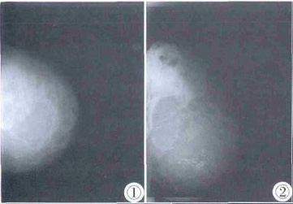
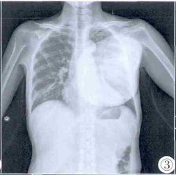

乳腺分叶状肿瘤1例
发表时间 : 2011-10-28来源:医脉通
病例女，47 岁。6 年前无意间发现左侧乳腺包块，质硬，无发热，无疼痛不适，无乳头溢液。6 年来包块缓慢增大，未予特殊处理。现左乳包块胀痛不适就诊。”
彩超示左侧乳腺内见一巨大实性团块， 形态不规则，边界不清晰，表面见散在的强回声斑，内部回声不均匀，血流丰富， 测得其中一动脉RI：0.57。诊断为左侧乳腺内巨大实性占位。乳腺钼靶CC 位、MLO 位（图1，2）示左侧乳腺内巨大肿块，分叶状，密度不均，后缘未包全，诊断为错构瘤。

图1，2 钼靶（CC 位，MLO 位）示左乳内巨大混杂密度肿块，几乎占据左乳全部象限。
胸片（图3）示左侧胸部重叠区域巨大团块影，左侧第4 前肋见破坏。

图3 胸片示左侧胸部重叠区域巨大团块影。
CT 诊断为左侧第4肋骨肿瘤，考虑软骨肉瘤可能。
患者入院后，经外科会诊，考虑手术难度大，建议转上级医院。出院半年后电话随访，患者未予治疗，自述左乳包块变化不明显。